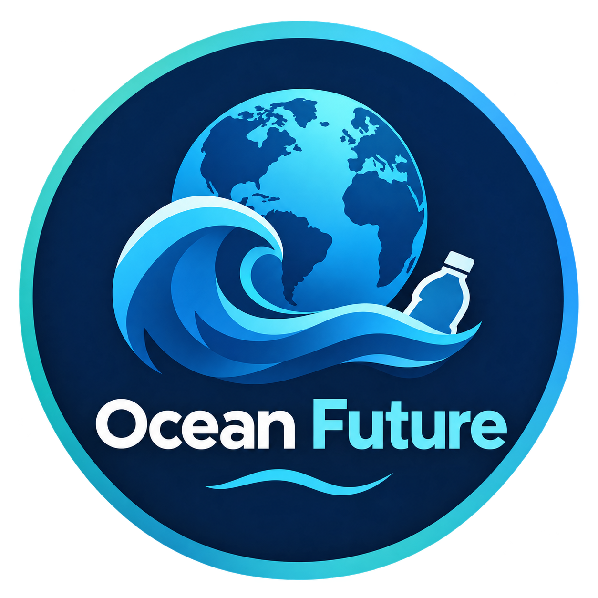

ECOSSISTEMAS
O lixo viaja
Correntes e ventos podem transportar detritos por grandes distâncias. O local onde um objeto é encontrado pode ser muito diferente do local onde entrou na água.

Explora dados publicados por instituições científicas, vê zonas aproximadas de acumulação e descobre como ajudar a proteger os oceanos.
Valores publicados pela OCDE para 2019. As percentagens estão arredondadas; não representam medições atuais nem apenas plástico encontrado no mar. Fonte: OCDE — Global Plastics Outlook ↗
O mapa e os controlos estão incorporados neste ficheiro e funcionam sem Internet. As zonas assinaladas são regiões aproximadas de acumulação em giros oceânicos; não são ilhas sólidas nem têm fronteiras fixas. O contorno cartográfico é uma representação geográfica de referência, não um mapa de densidade de plástico.
Este desenho é ilustrativo e não representa a extensão exata nem a densidade atual do lixo. A localização e concentração dos resíduos variam com correntes e ventos; não existem limites fixos para a mancha.
Este painel de detalhe é ilustrativo. Para explorar os continentes e aproximar as zonas, usa os controlos do mapa cartográfico acima. O mapa principal funciona sem Internet.
Ao longo do tempo, a luz solar, as ondas e o desgaste podem fragmentar objetos de plástico em pedaços cada vez menores. Os microplásticos podem espalhar-se pela água, pelos sedimentos e pelos seres vivos.
Importante: fragmentar não é o mesmo que desaparecer. Prevenir a entrada de plástico no ambiente continua a ser essencial.
Explorar a informação da UNEP ↗Correntes e ventos podem transportar detritos por grandes distâncias. O local onde um objeto é encontrado pode ser muito diferente do local onde entrou na água.
Alguns animais podem ficar presos em detritos ou confundir fragmentos com alimento. O impacto depende da espécie, do objeto e das condições.
Microplásticos são partículas de plástico com menos de 5 mm. Podem ser difíceis de recolher depois de se dispersarem no ambiente.
Foram geradas 353 milhões de toneladas de resíduos de plástico. A OCDE estimou que 22 milhões de toneladas vazaram para o ambiente e que 9% dos resíduos foram efetivamente reciclados. Estes três valores referem-se a 2019.
A série global da OCDE usada nestes indicadores termina em 2019. Para anos posteriores, apresentamos apenas informação adicional de fontes oficiais, sem interpolar valores nem misturar métricas diferentes. Fonte OCDE ↗ · Factos UNEP 2025 ↗
O que significa o valor de 22 milhões de toneladas da OCDE?
A UNEP estima que cerca de 11 milhões de toneladas de plástico entram nos ecossistemas aquáticos por ano. A estimativa inclui rios, lagos e mares, não apenas o oceano.
Consultar factos da UNEP ↗Foram geradas cerca de 353 milhões de toneladas de resíduos de plástico em 2019. A OCDE estima que 22 milhões de toneladas tenham vazado para o ambiente nesse ano.
Consultar relatório da OCDE ↗As chamadas “garbage patches” são zonas de concentração de detritos marinhos em giros oceânicos; não são ilhas sólidas de lixo com fronteiras fixas. Os dois mapas são orientativos e não mostram medições em direto.
Consultar explicação da NOAA ↗Todos os valores numéricos indicam a fonte e o ano de referência. Não existe aqui um contador em direto nem uma ligação a sensores. As localizações do mapa são aproximadas e servem apenas para orientação.
Ler avaliação da UNEP ↗Uma avaliação da ONU projetou que, sem medidas urgentes, a quantidade anual de plástico que chega ao oceano poderia atingir 23–37 milhões de toneladas em 2040. É uma projeção condicionada, não uma certeza nem uma medição atual.
Consultar avaliação da UNEP ↗A NOAA refere que detritos marinhos foram documentados como afetando mais de 700 espécies, incluindo aves, tartarugas, peixes e mamíferos marinhos. A investigação continua e o número pode aumentar.
Consultar informação da NOAA ↗Algumas estimativas históricas conseguiram explicar, com observações disponíveis, apenas cerca de 1% do plástico que se esperava encontrar a flutuar à superfície. Isto não significa que apenas 1% de todo o plástico oceânico esteja à superfície: mostra uma diferença entre estimativas e observações, que os cientistas continuam a investigar.
Ler a explicação da JAMSTEC ↗Participaste numa limpeza ou apanhaste lixo? Regista aqui a quantidade de plástico que ajudaste a recolher. O registo fica neste dispositivo e não altera os dados oficiais.
0 ações registadasQuantos quilos de plástico ajudaste a recolher? Este registo é só teu, fica nesta sessão e não é enviado para a internet.